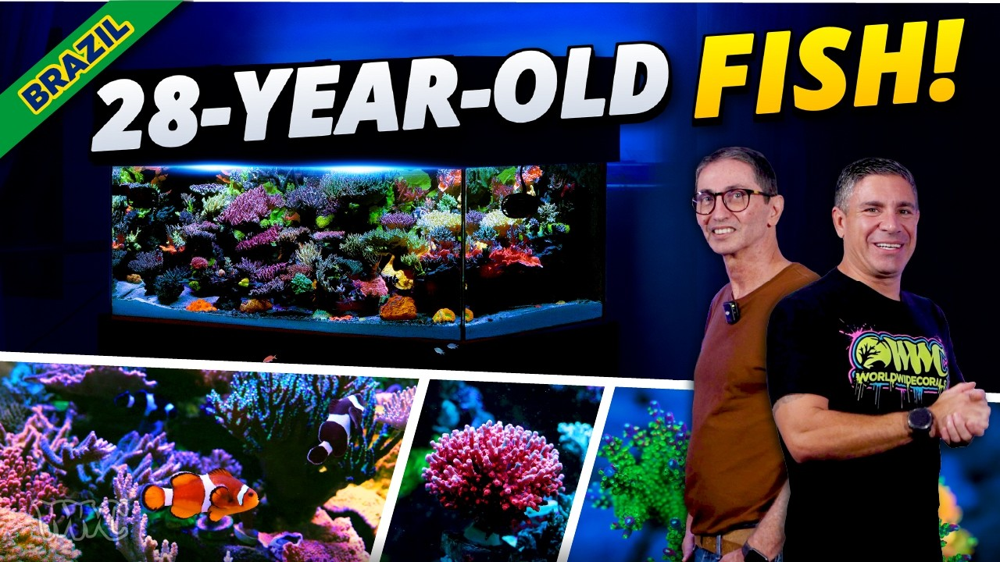

Saturday, November 28, 2026 · 25 items · back issues
Howdy, it's Isaac again.
Happy Saturday, reefing family, and welcome back to my Weekly Dive.
Here are the biggest things worth knowing:
- Escalating marine heatwaves drive taxonomic and functional trait loss in the world’s warmest coral reefs
- Signals of rapid genetic change in reef coral over time and following mass mortality
- Depth-dependent transcriptomic responses to thermal stress, including transcriptional frontloading, provide preliminary insights into the deep refugia hypothesis in a Mediterranean coral
- 📑 #NewStudy by Rose et al. test the balance between different herbivores – fishes and urchins – in tropical…
- Plus 21 more across husbandry & science, wild reefs, community
Let's dive into the news touching our hobby…
Community5
-
Flipper Invisi-Lid NANO: A Modular, Tool-Free Mesh Lid for Nano Tanks
Flipper Aquarium Products released the Invisi-Lid NANO, a modular mesh lid for nano tanks up to 16 inches. A practical accessory update for keepers running smaller reef systems.
Product Reefs.com · Josh Saul · Nov 25 · reefs.com
-
ReefStock Returns to Denver – Mark Your Calendars!
ReefStock 2027 returns to Denver in February with 70+ exhibitors showcasing frags, fish, equipment, and supplies. Major regional event for sourcing livestock and gear.
Reefs.com · xeniaforever · Nov 23 · reefs.com
-
Reef Retreat 2027: Registration Is Open for Volume III
Reef Retreat 2027 registration opens for a multi-day conference bringing together experienced hobbyists and coral researchers. Direct access to expert reasoning and peer discussion on keeping techniques.
Reefs.com · Randy Donowitz · Nov 23 · reefs.com
-
Let’s learn more about the Reefability Display with Andrew Bouwma
Andrew Bouwma discusses the Reefability Display, a product for reef tank management. The post is a headline-only excerpt with no substantive content about what the display does or why it matters.
Product Reefs.com · Marc Levenson · Nov 25 · reefs.com
-
Backyard to Storefront: A Third Place LFS - Episode 172 - Reef Beef Podcast
Podcast interviews hobbyist who operates hybrid LFS and coffee shop in Washington, discussing her path and community model. Interesting community-building approach but limited technical content.
1h 17m Reef Beef · Reef Beef Podcast · Nov 22 · youtube.com
Husbandry & Science6
-
Depth-dependent transcriptomic responses to thermal stress, including transcriptional frontloading, provide preliminary insights into the deep refugia hypothesis in a Mediterranean coral
Research on Corallium rubrum shows mesophotic populations exhibit transcriptional adaptations to thermal stress, suggesting deep refugia may aid shallow-population restoration. Directly relevant to understanding coral heat tolerance and restoration potential.
Coral Reefs · Sandra Ramirez‐Calero et al. · Nov 23 · doi.org
-
Distance‐ and Direction‐Dependent Effects of Macroalgae on Early Epilithic Bacterial Assemblages and Coral Settlement Processes
Research shows macroalgae inhibit coral recruitment by altering epilithic bacteria at specific distances and directions. This directly explains a critical mechanism of reef decline and coral settlement suppression that keepers managing algae-prone tanks should understand.
Environmental Microbiology · Chloé Pozas‐Schacre et al. · Nov 25 · doi.org
-
From coral reefs to gorgonian forests: shared cues and hierarchical settlement in a temperate octocoral (Paramuricea sp.)
Larval settlement in temperate octocorals follows cues from coralline algae and substrate topology, mirroring tropical coral patterns. Understanding settlement mechanisms applies directly to propagating both soft corals and stony species in captivity.
Coral Reefs · Christina Egger et al. · Nov 26 · doi.org
-
Insights into Coral Skeletogenesis from Raman Lattice Mode Signatures
Study uses Raman spectroscopy to analyze coral skeleton structure and stress responses. Understanding skeleton density and composition informs coral health assessment and resilience prediction.
Analytical Chemistry · Jacob Kleboe et al. · Nov 23 · doi.org
-
AVALIAÇÃO AGUDA DOS EFEITOS ECOTÓXICOLOGICOS DO COMPOSTO FOTOPROTETOR OXIBENZONA NO CORAL FORMADOR DE RECIFE Seriatopora caliendrum
Study shows oxybenzone sunscreen accelerates bleaching-related changes in Seriatopora caliendrum at elevated temperatures. Directly relevant to understanding reef stressors and chemical pollution impact on corals.
Anais do Congresso Brasileiro de Iniciação Científica · Ana Santos et al. · Nov 22 · doi.org
-
Effects of benthic animal disturbance on methane cycling in coastal tidal flats: reshaping sediment microenvironments and underlying mechanisms
Review examines how burrowing animals alter sediment chemistry and methane cycling in coastal tidal flats. The mechanisms may inform understanding of biogeochemical processes in reef systems.
Frontiers in Marine Science — Journal · Yin Ye · Nov 27 · frontiersin.org
Livestock & Corals2
-
At Project Seahorse, we are working to uncover the true scale of bottom trawling by enhancing knowledge for…
Project Seahorse works to quantify bottom trawling impacts on seahorses and marine ecosystems. Seahorses are traded ornamentals; conservation of wild populations informs sustainability of aquarium collection.
Project Seahorse — Bluesky · Nov 21 · bsky.app
-
🌊 Meet the Short-snouted seahorse, or Hippocampus hippocampus!
Project Seahorse highlights H. hippocampus identification for citizen science reporting on iNaturalist. Seahorses are sold in marine aquarium trade and understanding wild populations informs captive husbandry.
Project Seahorse — Bluesky · Nov 27 · bsky.app
Wild Reefs11
-
Escalating marine heatwaves drive taxonomic and functional trait loss in the world’s warmest coral reefs
Scientific Reports · Samara Zinman et al. · Nov 26 · doi.org
-
Signals of rapid genetic change in reef coral over time and following mass mortality
Science Advances · Kate M. Quigley et al. · Nov 25 · doi.org
-
📑 #NewStudy by Rose et al. test the balance between different herbivores – fishes and urchins – in tropical…
Study compares herbivory by fish and urchins across tropical and temperate reefs, examining shifts as reefs warm. Understanding which herbivores control algae under warming has direct implications for reef stability.
Australian Society for Fish Biology — Bluesky · Nov 26 · bsky.app
-
Effects of marine reserves on macroinvertebrate communities in harvested coral reefs in Madagascar
Study documents how marine protected areas affect macroinvertebrate communities in Madagascar coral reefs. Important for understanding reserve effectiveness beyond fish populations, which dominate existing MPA research.
PeerJ · Anirà Marc Rakotonirina et al. · Nov 24 · doi.org
-
Spatial exposure of Mauritanian cold-water coral ecosystems to fishing, hydrocarbon activities, and marine litter: implications for conservation
Research maps threats to cold-water coral ecosystems off Mauritania from fishing trawlers, hydrocarbon extraction, and marine litter. Cold-water corals host rich fauna and their conservation matters for understanding reef resilience under human pressure.
Frontiers in Marine Science — Journal · Lenaick Menot · Nov 27 · frontiersin.org
-
Comparative SEM–EDX analysis of intestinal calcium deposition in a teleost (Sardinella longiceps) and an elasmobranch (Rhinobatos annandalei): implications for marine carbonate cycling and coral reef ecosystems
Research compares carbonate precipitation in intestines of a teleost fish versus an elasmobranch, finding implications for oceanic carbonate cycling. Understanding how marine animals contribute to reef carbonate chemistry informs broader reef ecology.
International Journal of Drug Delivery Technology · Jeyapraba L et al. · Nov 25 · doi.org
-
VARIABILIDADE DO CRESCIMENTO CORALÍNEO EM BÚZIOS (RJ): UMA COMPARAÇÃO COM ANOMALIAS ASSOCIADAS AO EL NIÑO–SOUTHERN OSCILLATION (ENSO)
Analysis of coral growth records in Brazil reveals increased growth during El Niño events, suggesting ENSO influence on coral performance. Important for understanding climate oscillation effects on wild reefs.
Anais do Congresso Brasileiro de Iniciação Científica · Giulia Ferrazzano et al. · Nov 22 · doi.org
-
Sedimentation regimes determine variations in the structure of macroalgal assemblages on coral reefs in the Eastern Tropical Pacific Ocean: a case study
Sedimentation regime study shows how terrigenous sediment inputs shape macroalgal community structure on Eastern Tropical Pacific fringing reefs. Understanding how local environmental stressors alter reef algal dynamics informs broader reef health assessment.
Frontiers in Marine Science · Norma López et al. · Nov 25 · doi.org
-
📑 #NewStudy by Clarke et al. compares the fish communities calling a Western Australian world heritage area…
New study tracks year-to-year changes in fish communities at a Western Australian marine reserve. Findings on community variability inform conservation strategy for wild reef systems.
Australian Society for Fish Biology — Bluesky · Nov 23 · bsky.app
-
Touching corals in crises: “Feel Good” fragmentations of tentacular submarine restorations
Ethnographic study of restoration diver practices on the Great Barrier Reef examining human-coral interactions during coral fragmentation for heat tolerance. Academic framework for restoration work already in practice.
Feminist Anthropology · Ella Chiara Vallelonga · Nov 23 · doi.org
-
🌊#ElNiño is changing the ocean off California, but how is marine life responding?
CalCOFI research examines how El Niño is altering California's coastal ocean and marine life response. Broader oceanographic context but indirect relevance to tropical reef systems most kept in aquariums.
Scripps Institution of Oceanography — Bluesky · Nov 21 · bsky.app
Resource

18 Years of Acropora Growth & 28-Year-Old Clownfish! | Brazil Reef TourTour of an 18-year-old Acropora tank thriving on minimal intervention—water changes every four months, calcium reactor, no complex equipment. Demonstrates that system stability and patience outweigh gadget proliferation.
22 min World Wide Corals · Nov 26 · youtube.com
Get it in your inbox
One email a week, free. Every item links to its source.
Prefer a feed reader? Follow along by RSS.